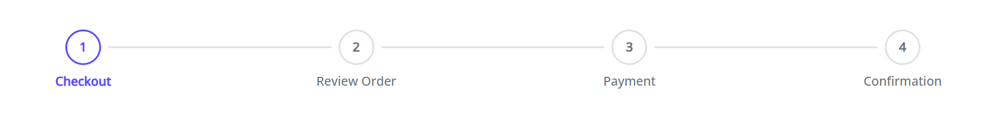

projects/congarevenuecloud/elements/src/lib/wizard/wizard.component.ts
The Wizard component provides a step-by-step navigation interface for multi-step processes such as checkout flows, forms, or configuration wizards.

import { WizardModule } from '@congarevenuecloud/elements';
@NgModule({
imports: [WizardModule, ...]
})
export class AppModule {}```typescript
// Using step numbers and checkmarks (default)
wizardConfig = { showStepNumbers: true };
<apt-wizard
[steps]="wizardSteps"
[config]="wizardConfig"
(stepChange)="onStepChange($event)"
>
</apt-wizard>// Using icons only (no checkmarks) wizardConfig = { showStepNumbers: false }; wizardSteps = [ { id: 'step1', label: 'Step 1', icon: 'fa fa-user' }, { id: 'step2', label: 'Step 2', icon: 'fa fa-check' } ]; <apt-wizard [steps]="wizardSteps" [config]="wizardConfig" [activeStepIndex]="currentStepIndex" (stepChange)="onStepChange($event)"
```
| selector | apt-wizard |
| styleUrls | ./wizard.component.scss |
| templateUrl | ./wizard.component.html |
Properties |
Methods |
Inputs |
Outputs |
| activeStepIndex |
Type : number
|
|
Current active step index. When this value changes, the wizard automatically navigates to the specified step. If not set, the wizard starts at the first step (index 0). |
| config |
Type : WizardConfig
|
Default value : {
showStepNumbers: true,
showNavigation: true,
}
|
|
Configuration options for the wizard |
| onStepNavigationRequest |
Type : function
|
|
Optional callback function to handle step navigation requests. If provided, this function will be called when a step is clicked. Return true to allow navigation, false to prevent it. This allows parent components to show confirmation dialogs before navigation. |
| steps |
Type : WizardStep[]
|
Default value : []
|
|
Array of wizard steps |
| stepTemplate |
Type : TemplateRef<any>
|
|
Template for custom step content |
| finish |
Type : EventEmitter
|
|
Event emitted when the wizard is completed |
| next |
Type : EventEmitter
|
|
Event emitted when the next button is clicked |
| previous |
Type : EventEmitter
|
|
Event emitted when the previous button is clicked |
| stepChange |
Type : EventEmitter
|
|
Event emitted when the active step changes |
| getStepClasses | ||||||||||||
getStepClasses(step: WizardStep, index: number)
|
||||||||||||
|
Get CSS classes for a step
Parameters :
Returns :
any
|
| getStepTemplate | ||||||||
getStepTemplate(index: number)
|
||||||||
|
Get the template for a specific step
Parameters :
Returns :
TemplateRef<any>
|
| goToStep | ||||||||
goToStep(stepIndex: number)
|
||||||||
|
Navigate to a specific step
Parameters :
Returns :
void
|
| onStepClick | ||||||||
onStepClick(stepIndex: number)
|
||||||||
|
Handle step click
Parameters :
Returns :
void
|
| trackByFn | ||||||||||||
trackByFn(index: number, step: WizardStep)
|
||||||||||||
|
Track by function for step iteration
Parameters :
Returns :
string
|
| currentStep |
Type : WizardStep
|
|
Current active step |
| currentStepIndex |
Type : number
|
Default value : 0
|
|
Current active step index |
| stepTemplates |
Type : QueryList<TemplateRef<any>>
|
Decorators :
@ContentChildren(TemplateRef)
|
|
Content children for step templates |
<div class="wizard-container d-flex flex-column w-100">
<!-- Progress Indicator -->
<div class="wizard-steps d-flex justify-content-between">
<ng-container *ngFor="let step of steps; let i = index; trackBy: trackByFn">
<div class="wizard-step d-flex flex-column align-items-center position-relative"
[ngClass]="getStepClasses(step, i)" (click)="onStepClick(i)">
<!-- Step Circle/Number -->
<div class="step-indicator d-flex align-items-center position-relative w-100 justify-content-center">
<div class="step-circle d-flex align-items-center justify-content-center">
<!-- Show step number if showStepNumbers is true and step is not completed -->
<ng-container *ngIf="config.showStepNumbers !== false && !step.completed">
{{ i + 1 }}
</ng-container>
<!-- Show checkmark if step is completed AND showStepNumbers is true -->
<ng-container *ngIf="step.completed && config.showStepNumbers !== false">
<i class="fa fa-check" aria-hidden="true"></i>
</ng-container>
<!-- Show icon if showStepNumbers is false and has icon (regardless of completion) -->
<ng-container *ngIf="config.showStepNumbers === false && step.icon">
<i [class]="step.icon" aria-hidden="true"></i>
</ng-container>
</div>
<!-- Connector Line -->
<div class="step-connector" *ngIf="i < steps.length - 1"></div>
</div>
<!-- Step Label -->
<div class="step-label text-center mt-2" tooltip="{{ step.label | translate }}" container="body"
placement="bottom" triggers="mouseenter:mouseleave">
<div class="step-title overflow-hidden text-break">{{ step.label | translate }}</div>
</div>
</div>
</ng-container>
</div>
<!-- Step Content -->
<div class="wizard-content bg-white rounded p-3" *ngIf="config.showContent !== false">
<div class="wizard-step-content">
<ng-container *ngIf="stepTemplates && stepTemplates.length > 0">
<ng-container *ngTemplateOutlet="getStepTemplate(currentStepIndex); context: { $implicit: currentStep }">
</ng-container>
</ng-container>
<!-- Default content projection -->
<ng-content></ng-content>
</div>
</div>
<!-- Navigation Buttons -->
<div class="wizard-navigation d-flex justify-content-between mt-4 pt-3 border-top" *ngIf="config.showNavigation">
<div class="wizard-navigation-buttons d-flex flex-column-reverse flex-md-row justify-content-between w-100">
<button type="button" class="btn btn-secondary wizard-btn-previous w-100 w-md-auto mb-2 mb-md-0"
[disabled]="!hasPreviousStep()" (click)="previousStep()">
<i class="fas fa-chevron-left mr-2" aria-hidden="true"></i>
{{ 'WIZARD.PREVIOUS' | translate }}
</button>
<button type="button" class="btn btn-primary wizard-btn-next w-100 w-md-auto mb-2 mb-md-0" *ngIf="!isLastStep()"
[disabled]="!hasNextStep()" (click)="nextStep()">
{{ 'WIZARD.NEXT' | translate }}
<i class="fas fa-chevron-right ml-2" aria-hidden="true"></i>
</button>
<button type="button" class="btn btn-success wizard-btn-finish w-100 w-md-auto mb-2 mb-md-0" *ngIf="isLastStep()"
(click)="finishWizard()">
<i class="fas fa-check mr-2" aria-hidden="true"></i>
{{ 'WIZARD.FINISH' | translate }}
</button>
</div>
</div>
</div>
./wizard.component.scss
.wizard-step {
flex: 1;
&.step-clickable {
cursor: pointer;
&:hover:not(.step-disabled):not(.step-active):not(.step-completed) {
.step-circle {
border-color: #007bff;
box-shadow: 0 0 0 2px rgba(0, 123, 255, 0.1);
}
}
}
&.step-disabled {
opacity: 0.6;
cursor: not-allowed;
.step-circle {
background-color: #f8f9fa;
color: #adb5bd;
}
}
&.step-active {
.step-circle {
background-color: white;
color: #007bff;
border: 2px solid #007bff;
}
.step-label {
.step-title {
color: #007bff;
font-weight: 600;
}
}
}
&.step-completed {
.step-circle {
background-color: #007bff;
color: white;
border-color: #007bff;
}
.step-connector {
background-color: #007bff;
}
.step-label {
.step-title {
color: #495057;
}
}
}
&.step-active.step-completed {
.step-circle {
background-color: #007bff;
color: white;
border-color: #007bff;
}
}
&.step-invalid {
.step-circle {
border-color: #ced4da;
}
.step-label {
.step-title {
color: #6c757d;
}
}
}
}
.step-circle {
width: 40px;
height: 40px;
border-radius: 50%;
background-color: white;
border: 2px solid #dee2e6;
color: #6c757d;
font-weight: 600;
transition: all 0.3s ease;
z-index: 1;
}
.step-connector {
position: absolute;
left: 50%;
top: 50%;
width: calc(100% - 56px);
height: 2px;
background-color: #dee2e6;
transform: translateY(-50%);
margin-left: 28px;
transition: background-color 0.3s ease;
}
.step-label {
max-width: 150px;
.step-title {
font-size: 0.875rem;
font-weight: 500;
color: #6c757d;
transition: color 0.3s ease;
display: -webkit-box;
-webkit-line-clamp: 2;
line-clamp: 2;
-webkit-box-orient: vertical;
}
}
.wizard-content {
min-height: 300px;
}
.wizard-step-content {
animation: fadeIn 0.3s ease;
}
.wizard-navigation-buttons {
gap: 1rem;
}
// Responsive styles
@media (max-width: 768px) {
.step-label {
.step-title {
font-size: 0.75rem;
}
}
.wizard-content {
min-height: 200px;
}
}